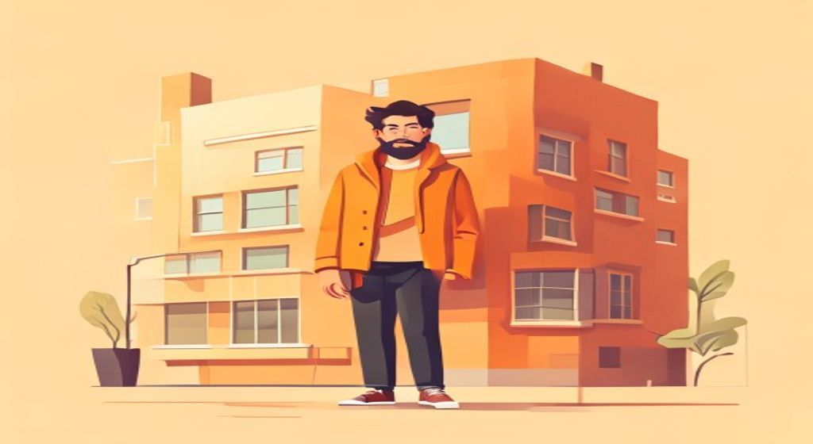
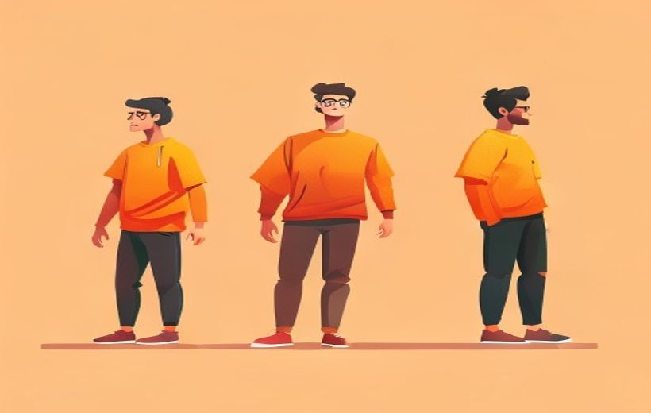

Las tres dimensiones (física, psicológica y sociológica), el arco de transformación, arquetipos de Jung y Vogler, y la jerarquía protagonista–antagonista–secundarios. Un buen personaje hace creíble la historia.

Un buen personaje hace creíble la historia.
El personaje no es quien aparece en pantalla: es el motor emocional de la historia — lo que le pase le tiene que importar al espectador antes que la trama misma.
🧠 Los conceptos
Despliega cada tarjeta, léela con calma y márcala como entendida. La barra de arriba irá subiendo.
El personaje es el motor de la historia y el puente emocional con el espectador. Sin personaje, la acción no significa nada. El espectador viene por la trama pero se queda por el personaje.
Hay dos formas de conectar con un personaje:
No necesitamos personajes "buenos"; necesitamos personajes comprensibles. Tony Soprano es un asesino, pero empatizamos con sus ataques de pánico. El Joker siembra el caos, pero entendemos su marginación.
Regla de oro: si quitas al personaje y la trama sigue igual, el personaje sobra. Debe causar las cosas, no solo reaccionar a ellas.
Lajos Egri propuso en The Art of Dramatic Writing (1946) que todo personaje creíble tiene tres dimensiones. Un personaje plano falla en una o varias; un personaje tridimensional se siente real.

Las 3 dimensiones: física, psicológica y sociológica.
| Dimensión | Qué incluye | Preguntas clave | Ejemplo: Eleven (Stranger Things) |
|---|---|---|---|
| Física | Edad, género, altura, salud, defectos físicos, apariencia | ¿Cómo se ve? ¿Cómo se mueve? | Niña de cabeza rapada, aspecto frágil, con poderes telecinéticos |
| Psicológica | Personalidad, miedos, deseos, traumas, inteligencia, moral | ¿Qué quiere? ¿De qué huye? ¿Qué le rompe? | Miedo al abandono, busca cariño y pertenencia, es valiente con sus amigos |
| Sociológica | Clase social, familia, educación, religión, política, entorno | ¿De dónde viene? ¿Cómo la ven los demás? | Criada en un laboratorio, no conoce las normas sociales; luego se integra con Mike y el grupo |
Esta distinción es crucial en el guion moderno. El personaje tiene siempre dos niveles:
| ¿Qué es? | ¿Qué mueve? | Ejemplo (Toy Story) | |
|---|---|---|---|
| Want (Deseo) | Objetivo externo y visible | La trama | Woody quiere seguir siendo el juguete favorito de Andy |
| Need (Necesidad) | Carencia interna del alma | El arco del personaje | Necesita superar sus celos y aprender a compartir el afecto |
En el clímax, el héroe a menudo debe renunciar al Want para conseguir el Need. Es el verdadero corazón del arco de transformación.
También existe la paradoja o contradicción: los seres humanos somos contradictorios. «El asesino tierno, el sabio despistado, el valiente supersticioso». Esa contradicción genera profundidad.
Si defines a un personaje con un solo adjetivo, es un estereotipo. Si necesitas "pero…" para definirlo, es un personaje. Batman: lucha por la justicia pero actúa como un criminal.
El arco de transformación es el recorrido emocional y moral del personaje desde el principio hasta el final: lo que cambia.
El arco de transformación del personaje.
| Tipo de arco | Qué ocurre | Ejemplo |
|---|---|---|
| Positivo (redención) | El protagonista crece, aprende, mejora. Supera una mentira interna. | El Rey León, Toy Story |
| Negativo (caída) | Decae moralmente. Es consumido por su defecto. | Walter White (Breaking Bad), Anakin Skywalker |
| Plano (ideal) | El personaje no cambia; transforma al mundo a su alrededor. | Goku, Forrest Gump, James Bond |
| Cíclico | Aparenta cambiar pero vuelve al inicio. | El día de la marmota |
El arco funciona con tres elementos internos:
El arco es simplemente el proceso de desmontar la Mentira y abrazar la Verdad. El cambio debe ser gradual: es una escalera de decisiones pequeñas, no un salto.
Los arquetipos son patrones universales de personaje que todas las culturas reconocen instintivamente. Carl G. Jung los llamó el inconsciente colectivo: moldes que están dentro de todos nosotros. Christopher Vogler los adaptó al cine moderno.
| Arquetipo | Lo motiva | Ejemplo audiovisual |
|---|---|---|
| Héroe | Probar su valor mediante el reto | Hércules, Wonder Woman, Luke Skywalker |
| Mentor / Sabio | Buscar y transmitir verdad | Gandalf, Yoda, Obi-Wan |
| Sombra (Antagonista) | Represalia, poder, orden alternativo | Darth Vader, Thanos, Hans Landa |
| Bufón / Trickster | Disfrutar, desestabilizar | Deadpool, Jack Sparrow, Han Solo |
| Inocente | Vivir feliz, sin malicia | Forrest Gump, Blancanieves |
| Forajido | Romper reglas, libertad | Han Solo, el Joker |
| Cuidador | Ayudar y proteger a otros | Mary Poppins, Sam Gamyi |
| Gobernante | Controlar y ordenar | Mufasa, Don Vito Corleone |
| Arquetipo (Vogler) | Función en la historia | Ejemplo en Star Wars |
|---|---|---|
| Héroe | Protagonista, conduce la acción | Luke Skywalker |
| Mentor | Guía y equipa al héroe | Obi-Wan Kenobi / Yoda |
| Sombra | Antagonista, reflejo oscuro del héroe | Darth Vader |
| Heraldo | Anuncia el reto, cataliza el cambio | R2-D2 (mensaje de Leia) |
| Guardián del umbral | Primer obstáculo antes del mundo especial | Stormtroopers en Tatooine |
| Aliado / Compañero | Apoya al héroe, refleja sus virtudes | Han Solo, Chewbacca |
| Trickster | Introduce humor y desorden | C-3PO |
| Cambiaformas | Lealtad ambigua; no sabemos de qué lado está | Han Solo al principio |
| Rol | Función | Ejemplo (Star Wars) |
|---|---|---|
| Protagonista | Conduce la acción; tiene el arco principal. No siempre es «buen tipo» (antihéroe). | Luke Skywalker |
| Antagonista | Se opone al protagonista. Cuanto mejor desarrollado, mejor la historia. | Darth Vader |
| Tritagonista | El tercer pilar; el catalizador. A menudo inclina la balanza entre los dos primeros. | Han Solo |
| Secundarios | Apoyan la trama o subtramas; dan contraste al protagonista. | Princesa Leia, C-3PO, R2-D2 |
| Figurantes / extras | Sin entidad propia; dan realismo y mundo. | Rebeldes anónimos |
Personaje plano vs redondo:
La regla de oro del audiovisual: show, don't tell. En cine, ser es hacer. El personaje se revela por lo que hace, no por lo que se nos dice de él. Las palabras pueden mentir; la conducta es la verdad.
Ejemplo perfecto: WALL-E. Nadie dice que esté solo. Lo vemos: guarda objetos curiosos, repite una escena romántica, intenta imitar el gesto de cogerse de la mano. Entendemos todo sin que nadie lo explique.
También existe la Biografía invisible (efecto iceberg): el espectador solo ve el 10% del personaje. El guionista debe conocer el 100% (el backstory) para que las reacciones sean coherentes. Shrek parece gruñón — pero detrás hay toda una vida de rechazo por ser ogro.
Joseph Campbell estudió los mitos de todas las culturas y descubrió que todas las grandes historias comparten la misma estructura: el monomito o viaje del héroe. Vogler lo adaptó al cine moderno en The Writer's Journey (1992).
| Fase | Qué ocurre |
|---|---|
| 1. El mundo ordinario | Vemos al héroe en su vida normal antes del conflicto |
| 2. La llamada a la aventura | Un evento rompe el equilibrio y propone el reto |
| 3. El rechazo de la llamada | El héroe duda o se niega inicialmente |
| 4. El encuentro con el mentor | Aparece una figura que lo guía y equipa |
| 5. La travesía del umbral | El héroe entra en el mundo especial (sin retorno fácil) |
| 6. Pruebas, aliados y enemigos | Enfrenta desafíos, forma alianzas y descubre oponentes |
| 7. La prueba traumática | El momento más oscuro; parece todo perdido |
| 8. La recompensa | Supera la prueba y obtiene lo que buscaba |
| 9. La resurrección | Prueba definitiva donde aplica todo lo aprendido |
| 10. El retorno con el elixir | Vuelve transformado y comparte lo ganado |
El propio tema cierra con un decálogo que resume todo lo que necesita un personaje para ser memorable:
🃏 Flashcards
Toca cada tarjeta para girarla. Tapa la definición con la mano y comprueba si te la sabes.
✅ Test rápido
6 preguntas tipo examen. Elige una opción y te corrige al momento con la explicación.
⭐ Preguntas del final de la presentación
La presentación no incluye una diapositiva de autoevaluación formal. Las siguientes son 3 preguntas de práctica extraídas del contenido del tema, del tipo que puede caer en examen.